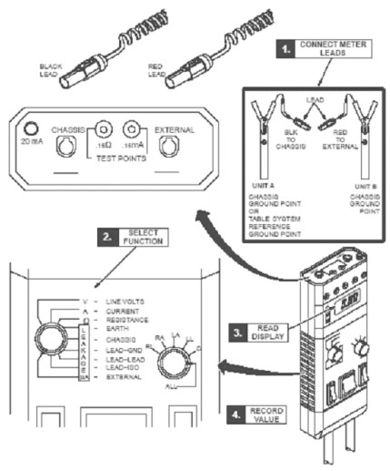
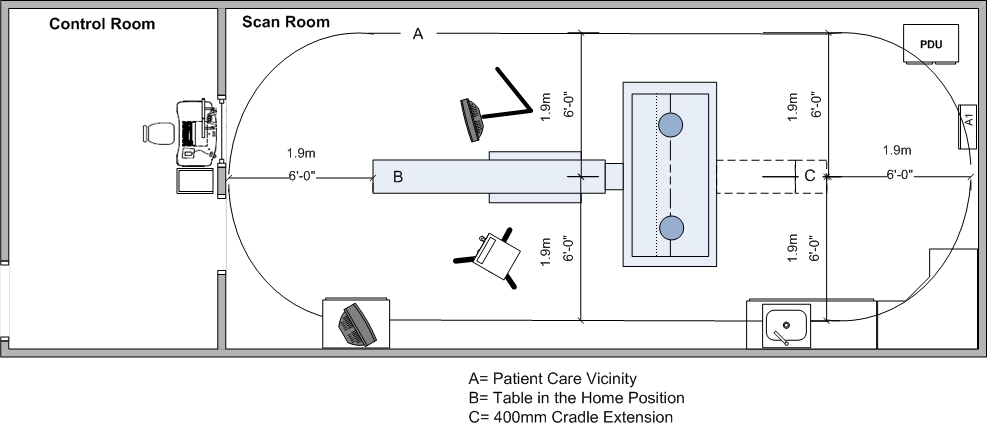
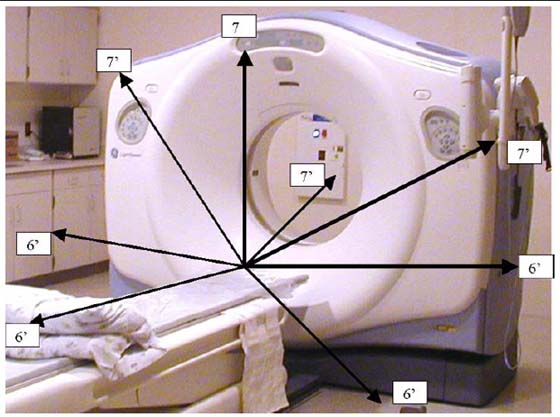

Operating Documentation
Direction 5193574-800, Rev# 22
LightSpeed 7.X Service Methods
Module Version 2.0, Version Date 6/28/11
Operating Documentation |
You must complete these tests after all options are installed. They cover three safety and leakage current checks:
Enclosure Leakage (Patient Touch) Test (completed after installation)
System Ground Resistance Measurement (completed during installation)
Ground Current Typical (completed after installation - optional)
| Required Persons | Preliminary Reqs | Procedure | Finalization |
| 1 | 10 mins | 20 mins | 10 mins |
Standard FE Tool Kit
Dale 600 Meter (from tool pool; p/n 46-328406G1)
Date extended length lead (part of p/n 46-328406G1)
| ||||
| POTENTIAL FOR SHOCK | ||||
| GROUND WIRES WILL HAVE GROUND CURRENT PRESENT WITH POWER “ON”. | ||||
| FOLLOW ALL PPE Procedure and SAFETY PROCEDURES FOR WORKING ON this product. |
| ||||
| The purpose of this test is to ensure that there is no potential shock hazard between equipment and/or other conductive surfaces within the patient care vicinity. The test is required, and must pass the defined specification touch points between existing equipment and potential patient touch points. Newly installed equipment and any conductive surfaces with the patient care vicinity should be tested before the system is turned over for customer use. | ||||
Only trained service personnel should service the GE CT Scanner.
Footswitch cover must be removed.
Move the table to ISO elevation.
Remove the footswitch covers and the gantry left side cover.
Refer to the Dale 601 Operator’s Manual for instructions on the use of the Dale 600 meter for measuring leakage current (or refer to Illustration 1, for a quick overview)
Illustration 1: Using Dale 600 to Measure Leakage Current

Plug the Dale 600 Meter into the outlet on the gantry left side. Confirm the outlet is correctly wired per the three LED indicators on the meter.
Connect one end of the shorter, black lead to the chassis plug and connect the other end to the table ground bus.
Connect the longer, red test lead (or the longer black lead) to the external plug on the top of the Dale 600 meter.
Set the function switch on the Dale meter to external. Use the external lead to touch the meter’s test terminal, to test that the meter is operational.
The black lead is connected to the table base ground bus, and the read lead is connected to the devices (components) under test.
| NOTE: | Your meter may have two black leads that are keyed for chassis and the ground connection. A valid calibration sticker must be present on the meter you use. Record this information on the GE Form e4879. |
Leakage current is tested with power ON.
Complete testing between the system reference ground point (table base) to unit reference ground points (i.e. gantry and table, see Illustration 3).
Test all conductive surfaces and components within patient reach or within 1.9 m (6 ft) of the table and 2.3 m (7.5 ft) above the table.
Measure at table maximum travels.
At some sites, wall outlet cover plates and sinks may become an issue.
Test all Optional components such as in-room monitors, injector, overhead monitor suspensions, and table options.
Record these results in the data sheet.
| Gnd Bus to | Install <0.1mA |
| Any table ground points within the 6’ range | |
| Any gantry ground points within the 6’ range | |
| Injector assembly metal surface | |
| Boom-in-Room metal surface | |
| Monitors or metal surface | |
| Sink or metal surface | |
| Installed table accessories | |
| (other) | |
| (other) | |
| (other) |
Test conditions:
Table max elevation, Min - Max travel
Patient face up and face down head first, feet first
Table min elevation 7.2 ft patient access to all conductive surfaces including:
IV poles and tray assembly
Any smart step monitors and stands
Table bearing rails
All other conductive surfaces
| ||||
| Be aware of Static Discharge from: scan window, keypads, displays, touch pads, or other plastic surfaces. | ||||
Procedure Hints:
Look for items that have abnormal measurements, high or low. These could indicate mis-wiring, loose connections, or poor connections due to corrosion, painted surfaces, etc.
High leakage could indicate a wiring error such as a neutral connected to the ground.
Fluctuating ground currents could indicate a short, poor connection, or facilities ground problem, causing leakage currents from other areas of the facility to flow through our system grounds.
Refer to the illustrations below, for measurement visual descriptions.
Illustration 2: CT Leakage Current Map

Illustration 3: Measuring points within Patient Care Vicinity

Refer to the procedures found in System/Site Continuity and Ground Checks.
No finalization required.
| NOTE: | Complete the CT System Chassis Leakage test and form, if required by your state, and forward the completed form to your Project Manager of Installation. (This form is located on the Service CD.) |
| Required Persons | Preliminary Reqs | Procedure | Finalization |
| 1 Engineer, 1 Customer Electrician | 2 hours labor on-site |
Labor time includes:
Removal of covers
Leakage test
Reinstallation of covers
Recording of site data if required by your state. Forward the completed form to your Project Manager of Installation.
Standard FE Service Tool Kit
GE LOTO Kit
Dale 600 or 601 Leakage Current Meter (from tool pool; p/n 46328406G1)
Documentation: LOTO PPE in the Equipment Service section of the Service Methods manual.
| NOTE: | This procedure was validated only with the Dale 600/601. GE cannot guarantee the accuracy of this procedure if you use another meter. |
| ||||
| POTENTIAL FOR ELECTRIC SHOCK | ||||
| GROUND WIRES WILL HAVE GROUND CURRENT PRESENT WITH POWER “ON”. | ||||
| THIS TEST IS PERFORMED WITH POWER “ON” - SYSTEM IN STAND-BY! |
| ||||
| Follow ALL required safety, PPE, and arc-flash procedures customary for your organization, when working on this product. | ||||
| ||||
| POTENTIAL FOR ELECTRIC SHOCK | ||||
| SERVICING HARDWARE WITH POWER “ON”. | ||||
Remove the Gantry right side cover.
Power down the console and follow the GEHC LOTO procedure.
Remove the Table foot switch top cover to gain access to the ground cables and ground bar.
| NOTE: | Do NOT disconnect ANY grounds at this time. |
Confirm that all system grounds are securely attached to the system ground buss and NOT the Table base.
The electrician will remove all external electrical connections made during installation, including:
Main system ground at PDU
Power feeder flex connection at PDU
Room door interlocks and room warning light connections
Any and all other external ground connections to the system.
Confirm that all external gantry, table, console, and PDU connections have been removed.
| NOTE: | Some wires such as the room warning light may have external power and wire nuts, which should be installed to protect from arching. |
Follow the LOTO procedure for re-energizing power and boot to application level.
Plug the Dale 600 / 601 Leakage Current Meter into one of the outlets on the gantry.
Connect the meter leads to the meter as follows:
Connect one end of the shorter black lead to the chassis plug and the other to the table ground bus.
Connect the longer red test lead to the external plug on top of the Dale 600 / 601 meter.
Set the function switch on the Dale 600 / 601 meter to EXTERNAL. Using the external lead, touch the meter’s test terminal to confirm that the meter is operational.
| NOTE: | For more detailed information, refer to the Dale 600 / 601 Operator’s Manual or see Illustration 1, for a quick overview. |
With the system at application-level and all components functional, test the system ground wires as follows:
Remove a sub-system ground wire.
Test that sub-system ground wire.
Complete the CT System Chassis Leakage Form, if required by your state, and forward the completed form to HHS Administration. (This form is located on the Service CD.)
Replace that sub-system ground wire.
Repeat, testing all system ground wires ONE-AT-A-TIME. A list of the system ground wires appears in Table 1.
| NOTE: | The measured leakage current must not exceed 5 MA in any ground wire. |
Table 1: System Ground Measurements
| Components | Results | Date | Tester |
| PDU Leakage 1/0 | |||
| Gantry Leakage 1/0 | |||
| Console Leakage #2 | |||
| Table Leakage #10 | |||
| Option Grounds, if present |
After completing all tests, follow the LOTO procedure to power down the system.
The electrician will reinstall all electrical connections, conduits, cables, and wires removed in Step 6 and will secure all connections per NEC code. Check that all connections are securely tightened.
Reinstall all removed system covers, except for the gantry right-side cover, located by the service switch panel.
| NOTE: | Complete this section of the installation manual on-site. |
Follow the LOTO procedure for re-energizing power.
Turn-on the gantry service switches and power up the console.
Check that no cables remain in the gantry rotating path.
Check that the table controls and footswitch function properly.
Re-test the system by completing a system functional scan. If installed, be sure to test the room warning light and the door interlock at this time.